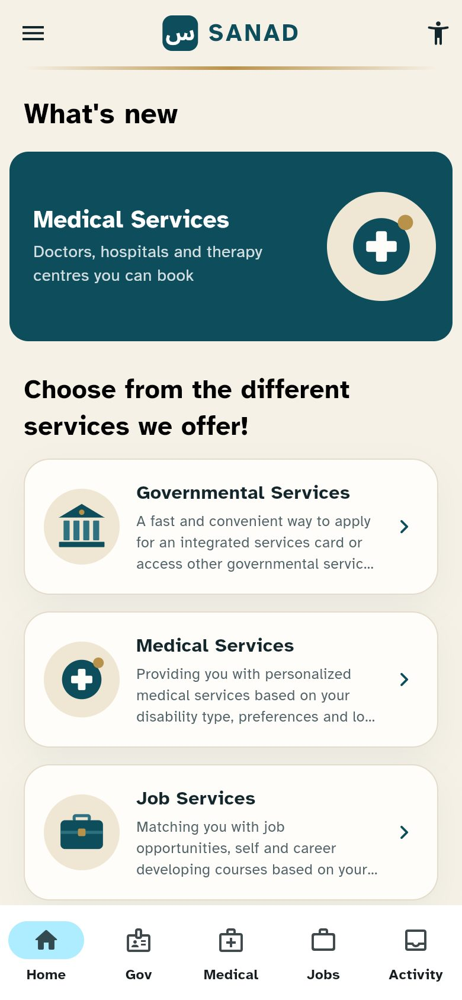
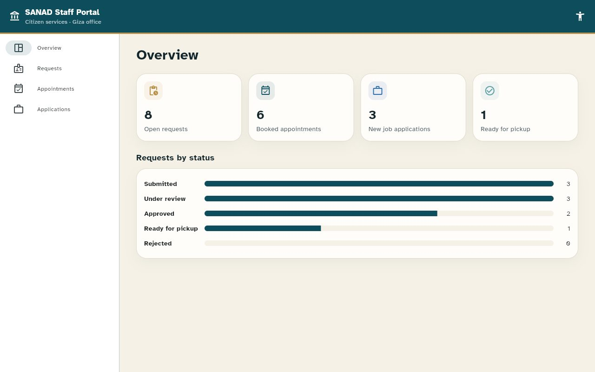

SANAD puts government paperwork, medical bookings and job applications in one app built for people with disabilities. Staff handle every request from a portal, and citizens follow it from submitted to ready.

Each request gets a reference number and a clear status, so nobody has to call to ask where it is.
Renew a national ID or apply for an integrated services card, then follow it to pickup.
Doctors, hospitals, radiology and physiotherapy centres, with real time slots and cancellation.
Apply once per job and see when you are shortlisted or invited to interview.
Text up to 160%, high contrast, bold text, reduced motion and screen-reader labels everywhere.
Appointments, requests and applications together, each with its live status.
A queue to review and approve requests, mark appointments attended and answer applicants.
Open requests, booked appointments and new applications at a glance, with every action a citizen sees reflected in their activity.

One Flutter codebase for Android, iOS and the web. State lives in a single store that is saved on the device; accessibility settings apply to every screen. Tests and CI run on every push.